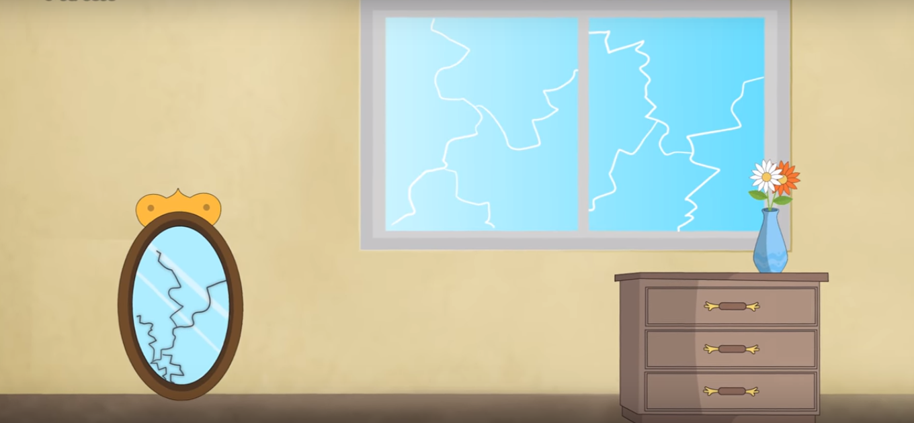
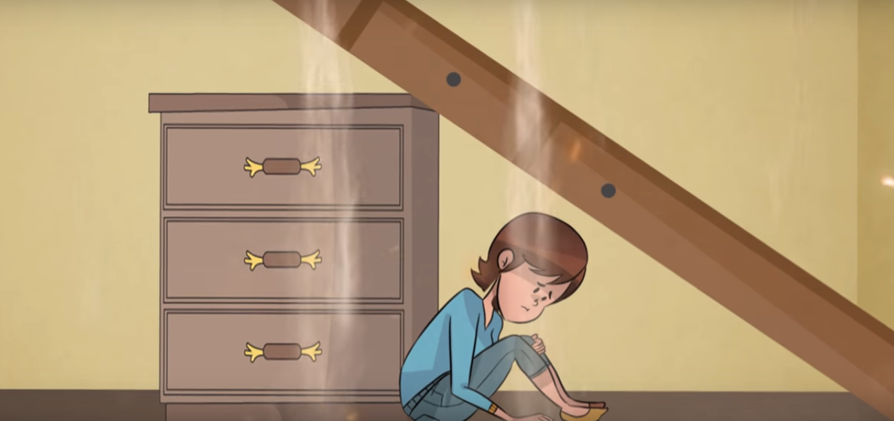
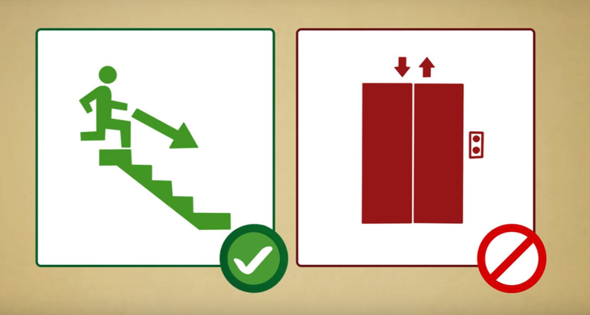
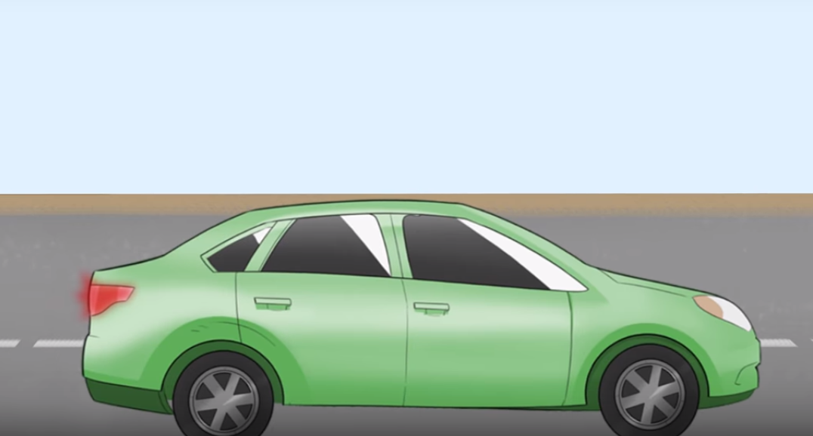
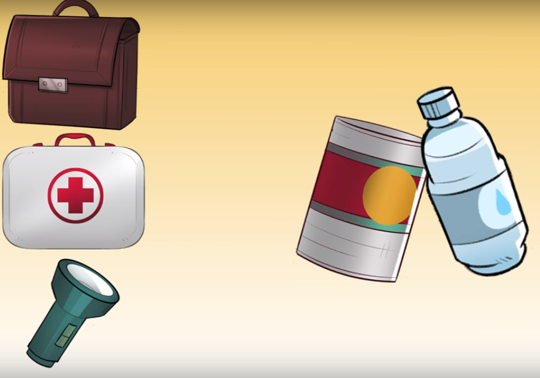

CASA O EDIFICIO
•Guardar la calma
•Alejarse de objetos que pueden caerte encima como ventanas o espejos.
•Mantenerse en posición fetal al costado de un mueble o algún objeto de forma vertical.
•Apagar las llaves de corriente, agua, gas.
•Usar escaleras y no ascensores.
  CALLE
•Buscar un lugar despejado o algún objeto de forma vertical.
•Si estas conduciendo estaciónese en un lugar despejado y encender las luces intermitentes.
•Si quedaste atrapado haz sonidos con objetos y evitar gritar ya que el polvo te puede asfixiar
•Siempre tener un botiquín, linternas, documentos de los familiares, botellas de agua y comida enlatada.
 